Soru 1Cevap: C
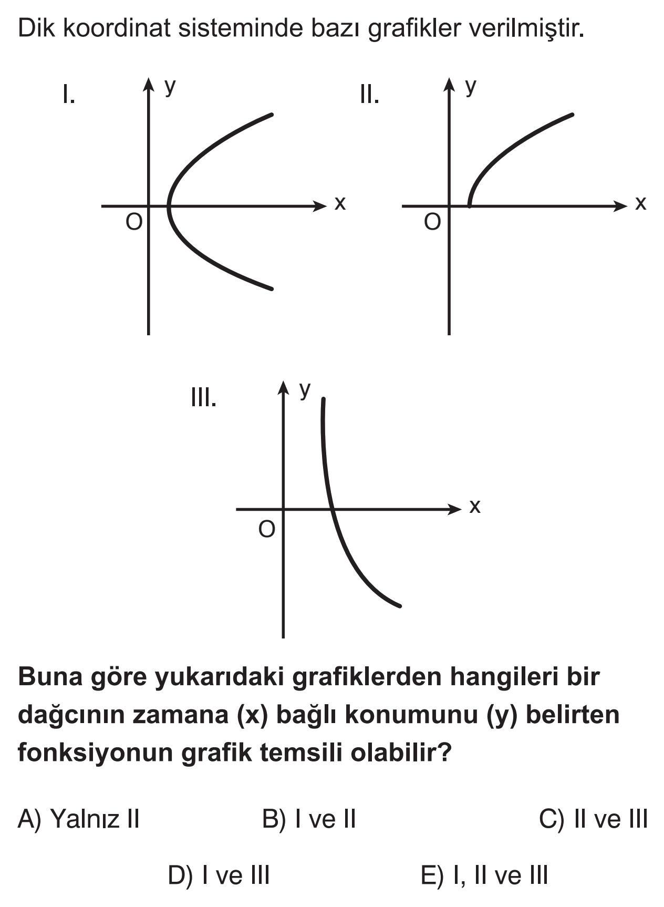
Çözüm
- Bir anda karınca yalnız bir konumda bulunabilir: her $x$ (zaman) için tek $y$ olmalı.
- I'de $x\gt0$ için iki $y$ değeri var: fonksiyon değil.
- II ve III'ü her dikey doğru bir kez keser: cevap II ve III (C).
Cevap: C
Soru 2Cevap: E
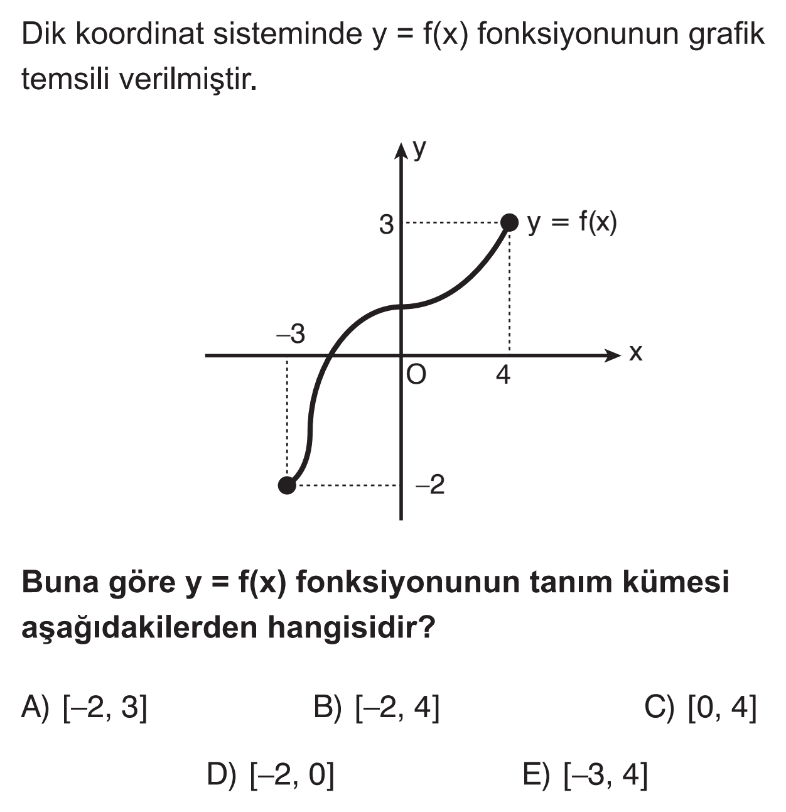
Çözüm
- Tanım kümesi grafiğin $x$ ekseni üzerindeki izdüşümüdür.
- Grafik $x=-3$'teki dolu noktadan $x=4$'teki dolu noktaya kadar kesintisiz.
- Tanım kümesi $[-3,4]$ (E).
Cevap: E
Soru 3Cevap: C
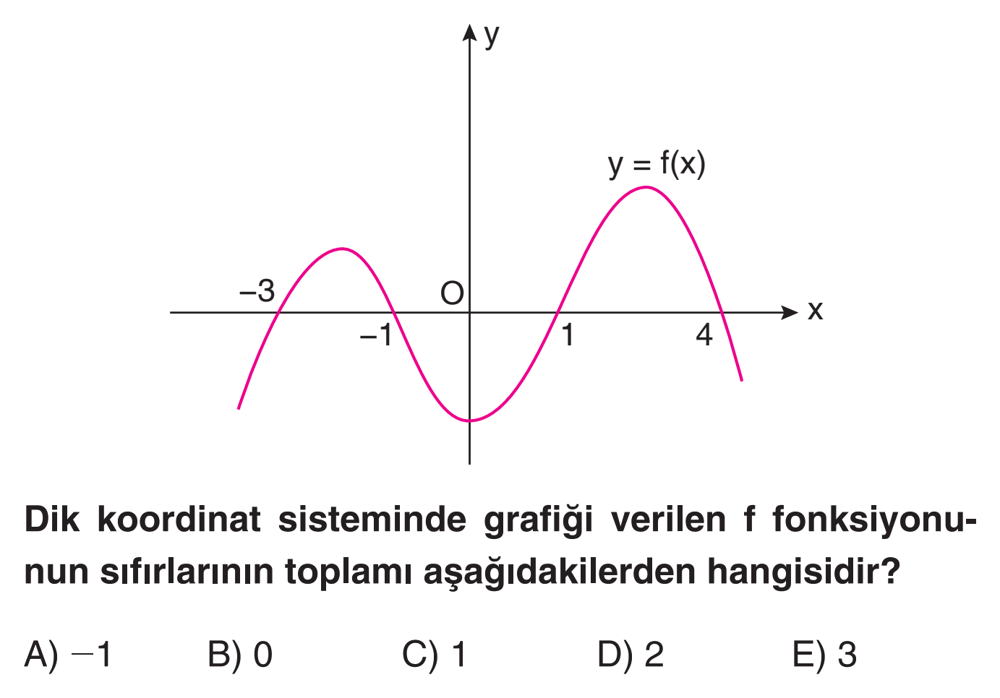
Çözüm
- Fonksiyonun sıfırları grafiğin $x$ eksenini kestiği noktaların apsisleridir.
- Grafik $x$ eksenini $-3,\ -1,\ 1,\ 4$'te kesiyor.
- Toplam $-3-1+1+4=1$ (C).
Cevap: C
Soru 4Cevap: E
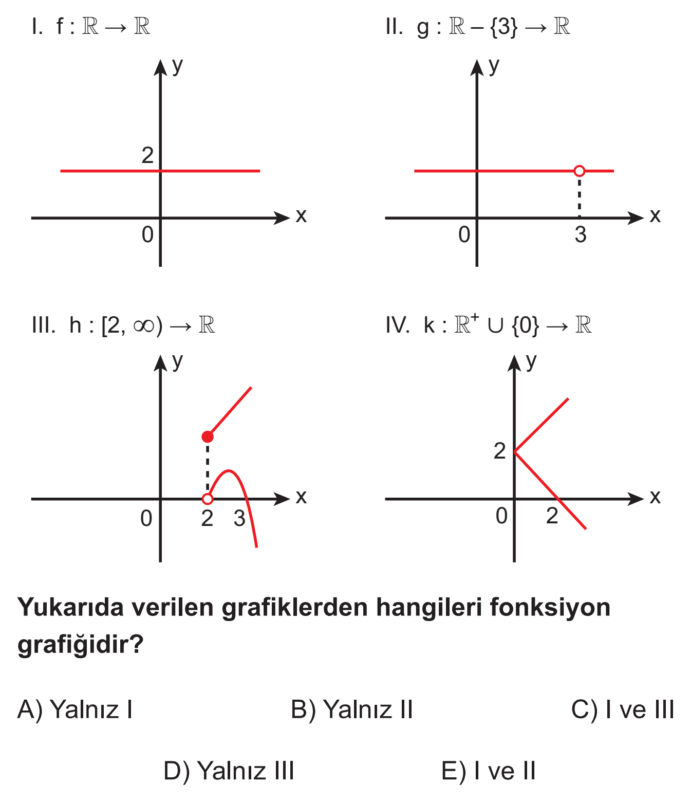
Çözüm
- Bir grafiğin fonksiyon olması için tanım kümesindeki her $x$ için yalnız bir $y$ olmalı (dikey doğru testi).
- I: $f(x)=2$ sabit fonksiyon, II: $x=3$ tanım kümesinde olmadığından boşluk sorun değil; ikisi de fonksiyondur.
- III'te $x\in(2,3)$ için iki ayrı $y$ değeri, IV'te her $x\gt 0$ için iki $y$ değeri vardır; fonksiyon değildir. Cevap: I ve II (E).
Cevap: E
Soru 5Cevap: E
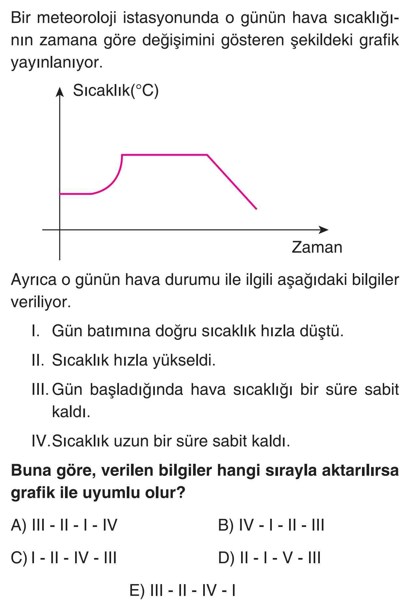
Çözüm
- Grafik önce kısa bir süre sabit (III), sonra hızla yükseliyor (II).
- Ardından uzun süre sabit kalıyor (IV).
- En sonda hızla düşüyor (I): III - II - IV - I (E).
Cevap: E
Soru 6Cevap: A
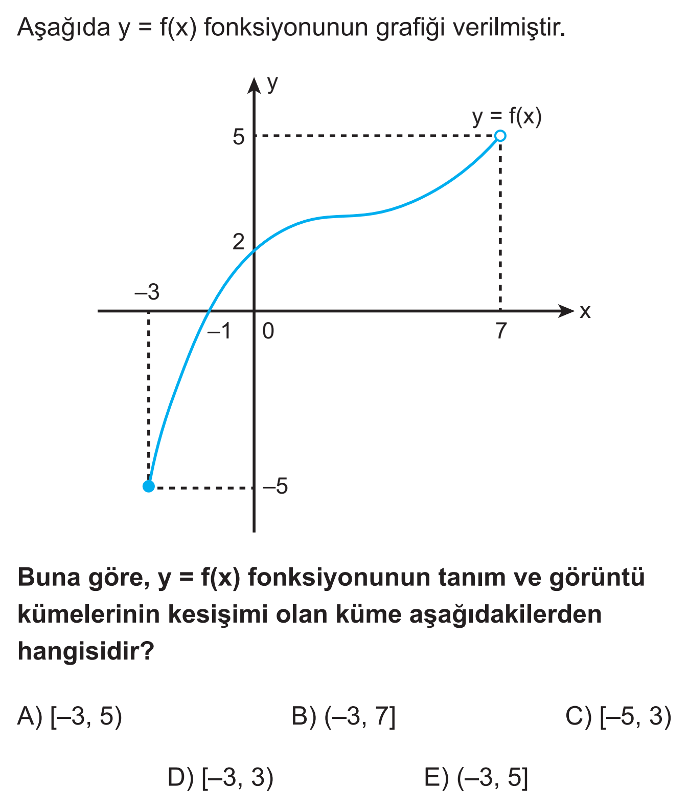
Çözüm
- Grafik $x=-3$'te dolu, $x=7$'de boş noktayla biter: tanım kümesi $[-3,7)$.
- En küçük değer $-5$ (dolu), en büyük değer $5$'e ulaşılmaz (boş): görüntü kümesi $[-5,5)$.
- Kesişim $[-3,7)\cap[-5,5)=[-3,5)$ (A).
Cevap: A
Soru 7Cevap: E
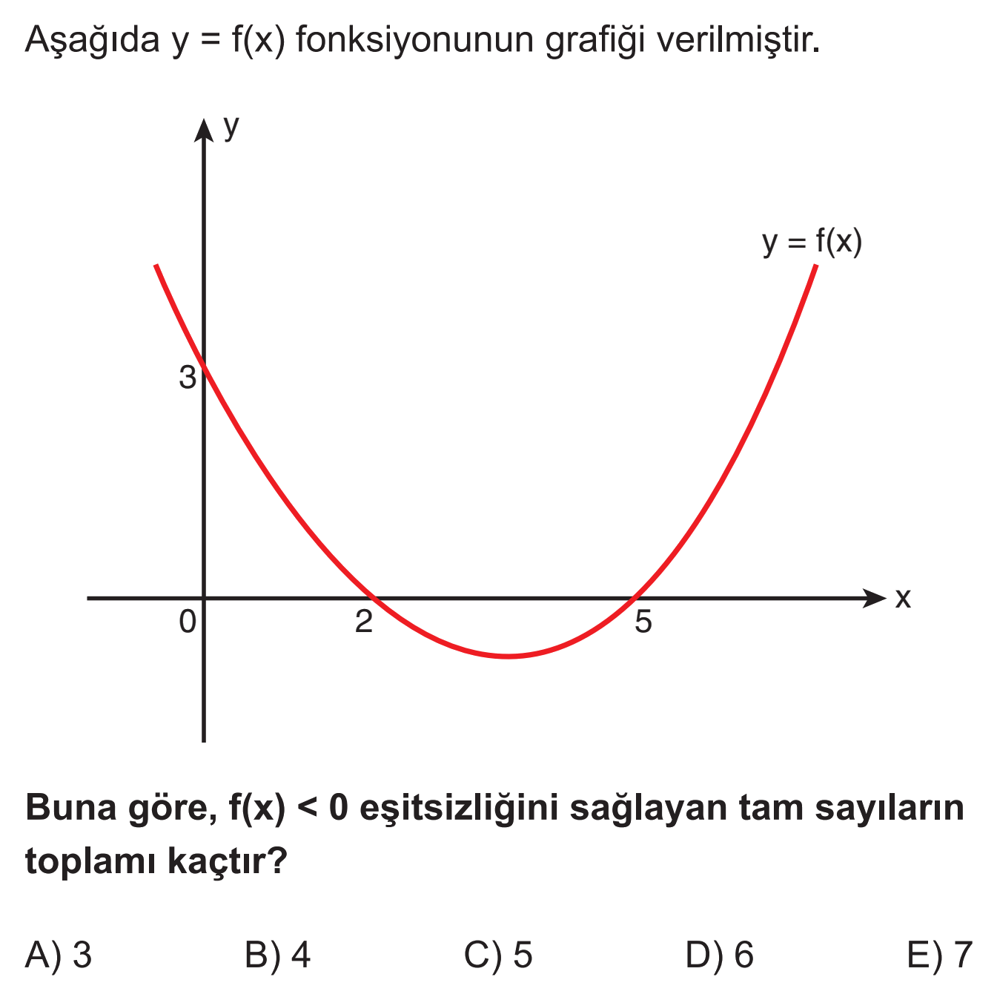
Çözüm
- $f(x)\lt 0$ olan yerde grafik $x$ ekseninin altındadır.
- Grafik $x=2$ ile $x=5$ arasında eksenin altında: $2\lt x\lt 5$.
- Tam sayılar $3$ ve $4$; toplam $7$ (E).
Cevap: E
Soru 8Cevap: A
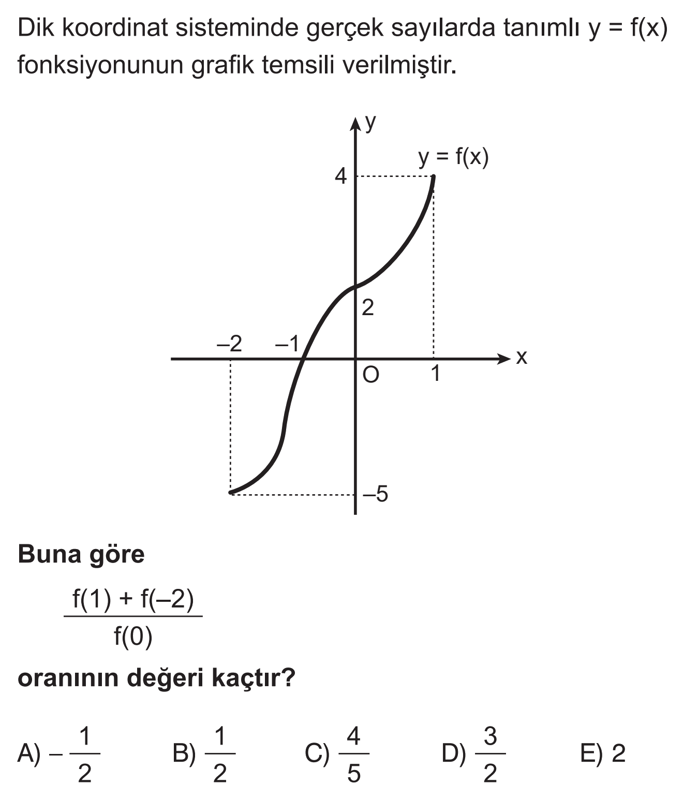
Çözüm
- Grafikten $f(1)=4$, $f(-2)=-5$, $f(0)=2$.
- Pay $4+(-5)=-1$.
- Oran $\dfrac{-1}{2}=-\dfrac12$ (A).
Cevap: A
Soru 9Cevap: D
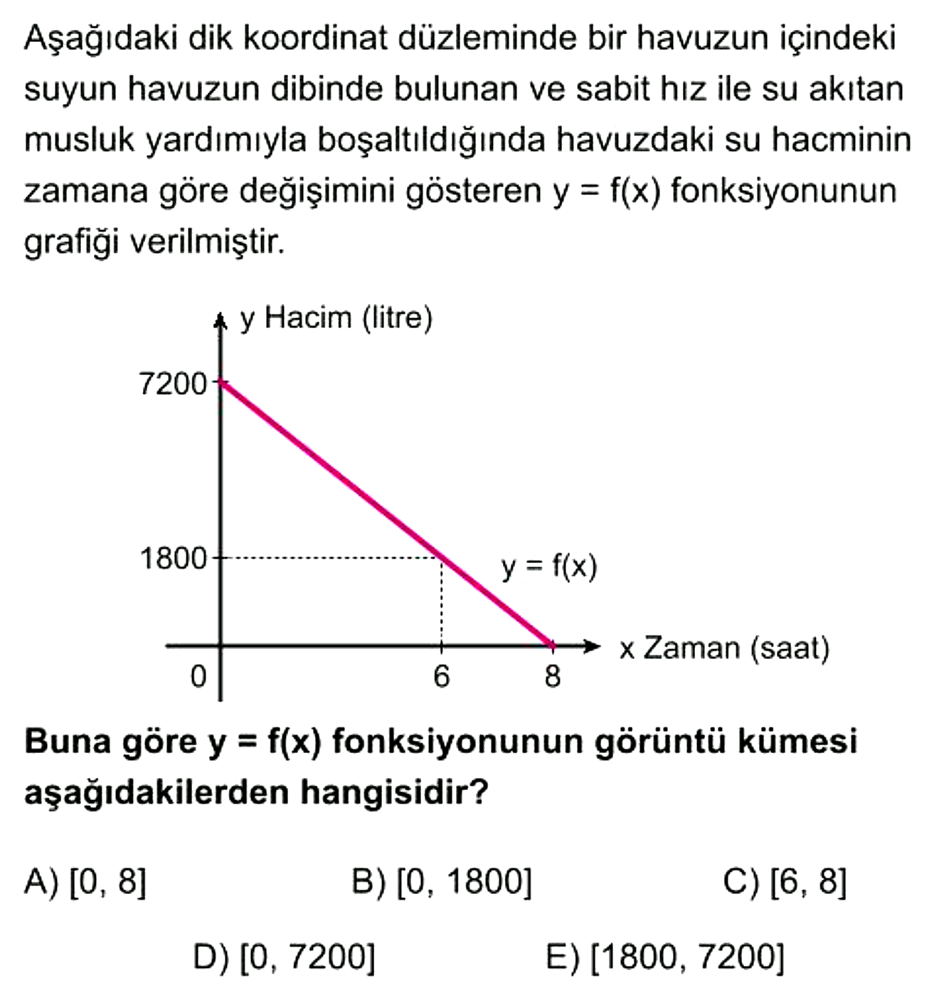
Çözüm
- Hacim $t=0$'da $7200$ litre, $t=8$'de $0$ litre.
- Doğrusal azalma boyunca aradaki tüm değerler alınır.
- Görüntü kümesi $[0,7200]$ (D).
Cevap: D
Soru 10Cevap: E
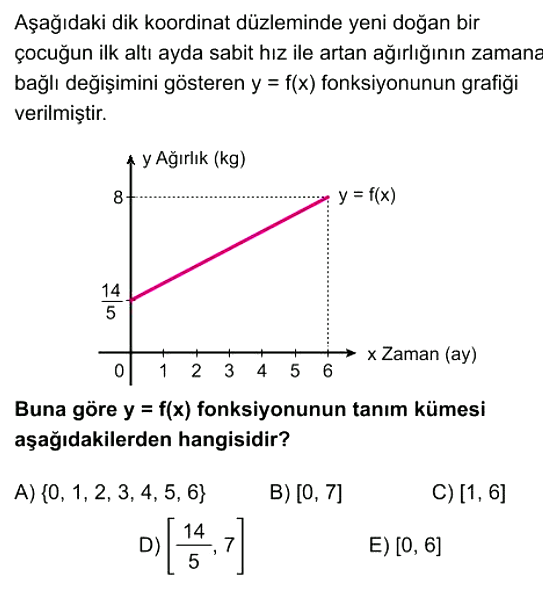
Çözüm
- Grafik ilk altı ayı, yani $x=0$'dan $x=6$'ya kadar olan zamanı gösteriyor.
- Zaman sürekli bir niceliktir; aradaki tüm gerçek değerler dahildir.
- Tanım kümesi $[0,6]$ (E).
Cevap: E
Soru 11Cevap: B
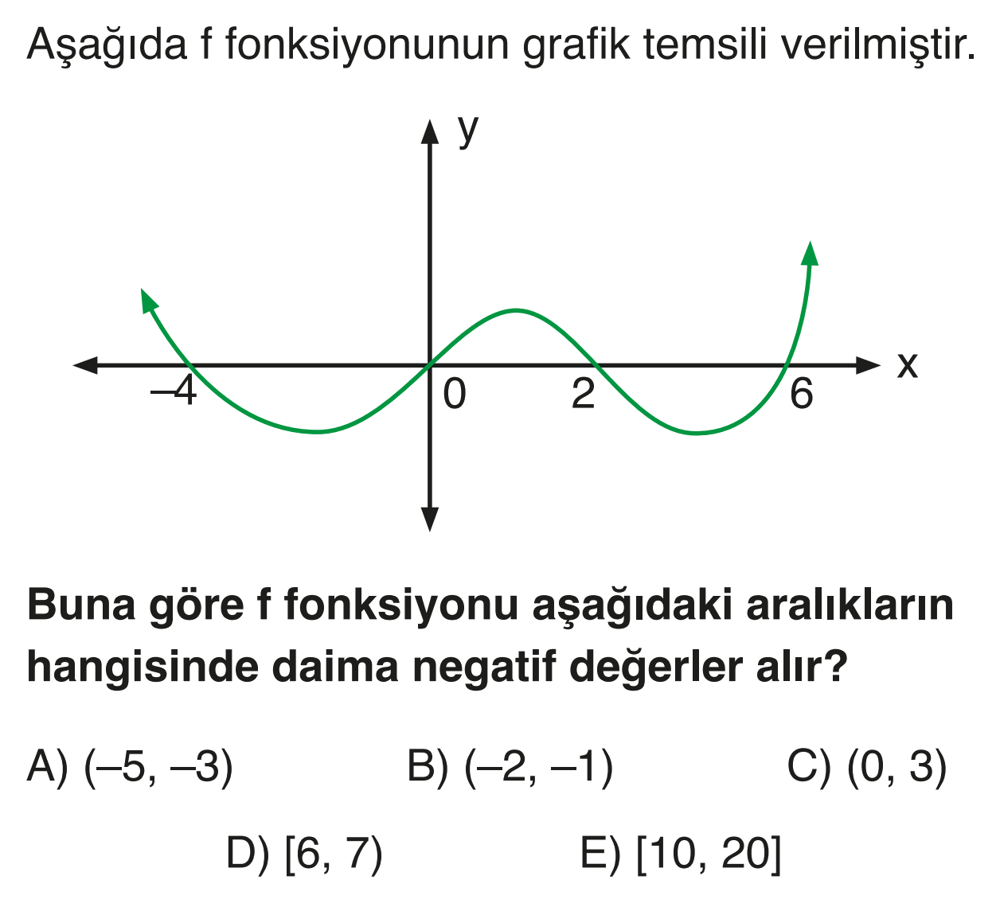
Çözüm
- Sıfırlar $-4,\ 0,\ 2,\ 6$.
- Grafik $(-4,0)$ ve $(2,6)$'da eksenin altında: negatif.
- Seçeneklerden tamamı bu bölgelerde kalan $(-2,-1)$ (B).
Cevap: B
Soru 12Cevap: A
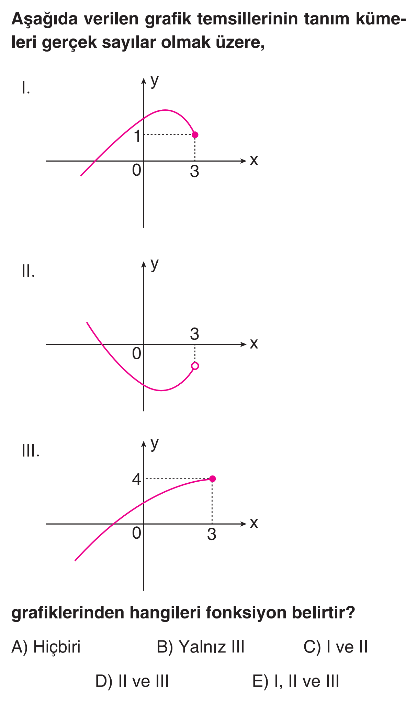
Çözüm
- Tanım kümesi $\mathbb R$ ise her gerçek $x$ için grafikte tam bir nokta olmalı.
- I ve III $x=3$'te bitiyor; $x\gt3$ için değer yok. II'de $x=3$ boş nokta, değer yok.
- Hiçbiri $\mathbb R$'de fonksiyon değildir (A).
Cevap: A
Soru 13Cevap: B
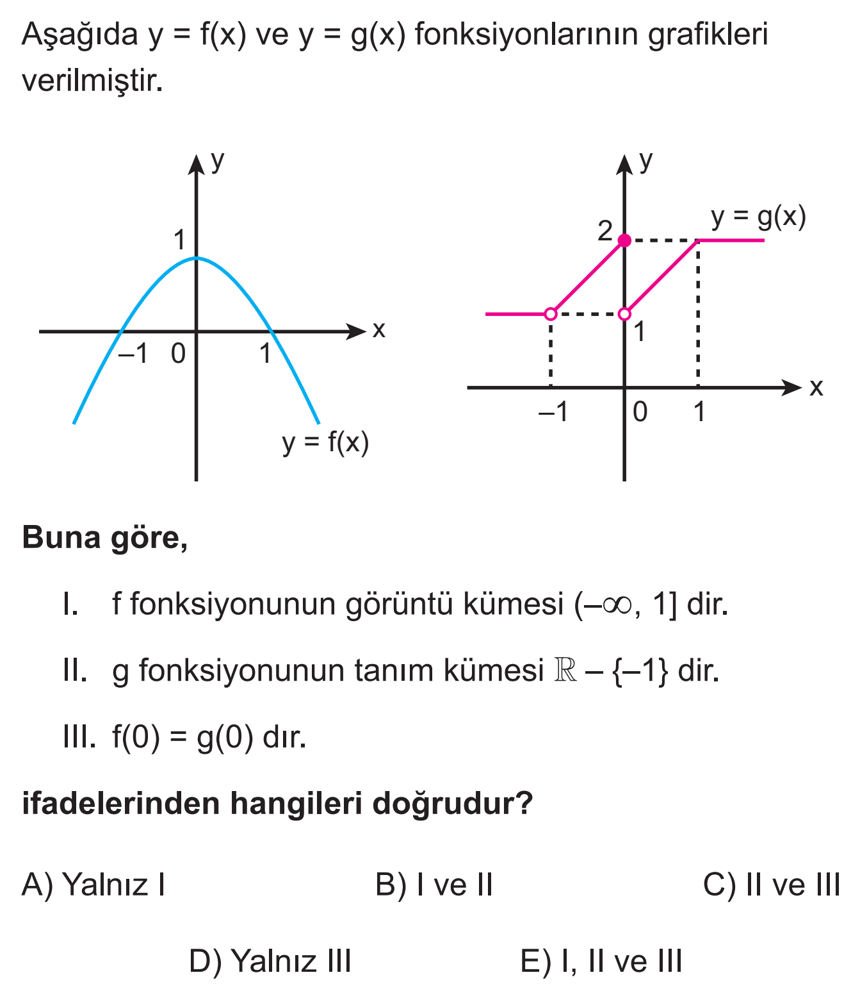
Çözüm
- $f$'nin en büyük değeri $1$ ve kollar aşağı uzar: $f$'nin görüntü kümesi $(-\infty,1]$, I doğru.
- $g$'nin grafiğinde $x=-1$ için nokta yok (boş daire): tanım kümesi $\mathbb{R}-\{-1\}$, II doğru.
- $f(0)=1$, $g(0)=2$ (dolu nokta) olduğundan III yanlış. Cevap: I ve II (B).
Cevap: B
Soru 14Cevap: C
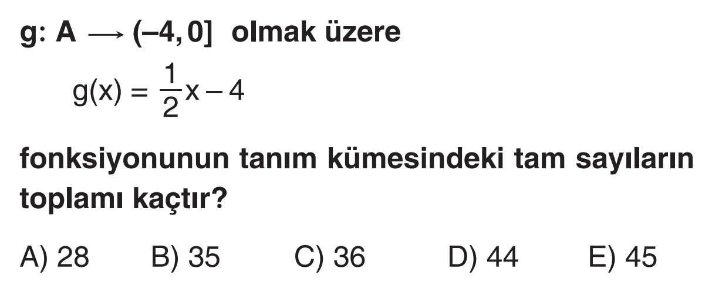
Çözüm
- $-4\lt \dfrac x2-4\le 0$ olmalı.
- $0\lt \dfrac x2\le 4\Rightarrow 0\lt x\le 8$.
- Tam sayılar $1,\dots,8$; toplam $36$ (C).
Cevap: C
Soru 15Cevap: E
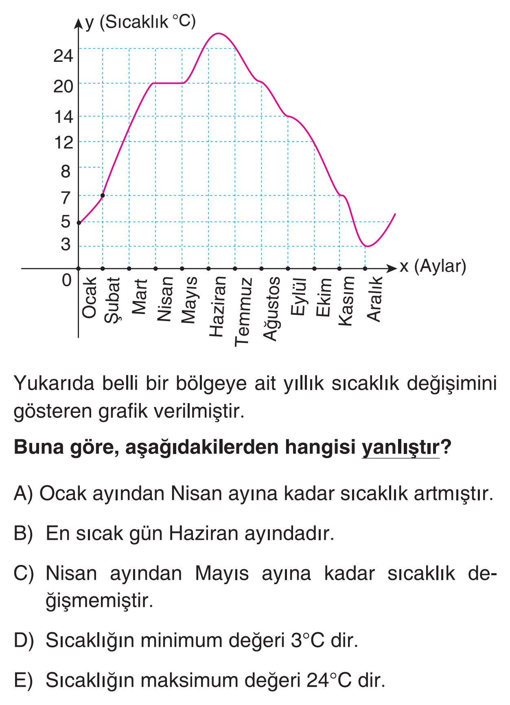
Çözüm
- Ocak–Nisan arası yükseliş, Nisan–Mayıs sabit, en yüksek nokta Haziran'da.
- En düşük değer Kasım–Aralık arasındaki $3$°C.
- Haziran'daki tepe $24$°C'nin üzerindedir: maksimum $24$ değildir; yanlış olan E.
Cevap: E
Soru 16Cevap: E
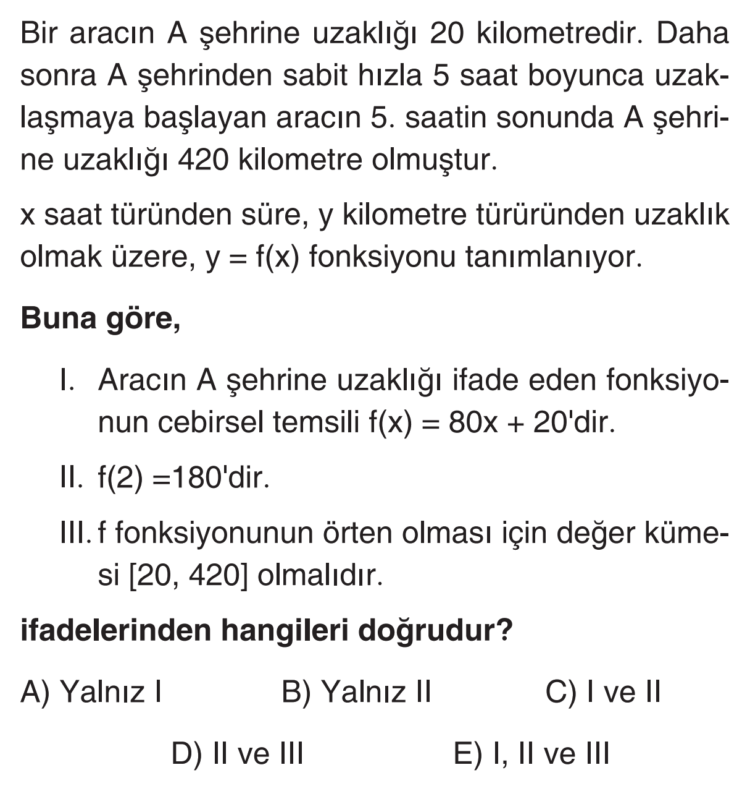
Çözüm
- 5 saatte uzaklık $20$'den $420$'ye çıkıyor: hız $\dfrac{400}{5}=80$, $f(x)=80x+20$ (I doğru).
- $f(2)=160+20=180$ (II doğru).
- Görüntü kümesi $[f(0),f(5)]=[20,420]$; örten olması için değer kümesi bu olmalı (III doğru). Cevap E.
Cevap: E
Soru 17Cevap: A
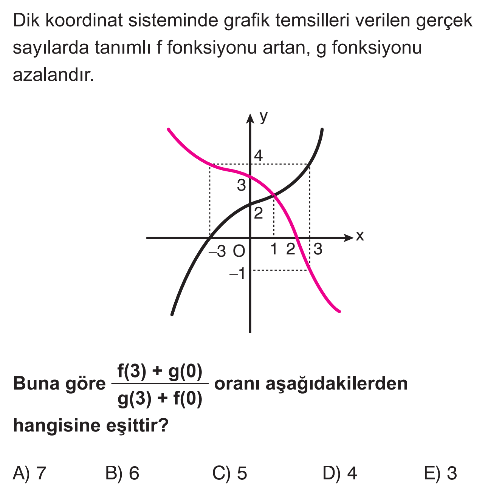
Çözüm
- Grafikten $f(0)=2$, $f(3)=4$; $g(0)=3$, $g(3)=-1$.
- Pay $f(3)+g(0)=4+3=7$, payda $g(3)+f(0)=-1+2=1$.
- Oran $7$ (A).
Cevap: A
Soru 18Cevap: B
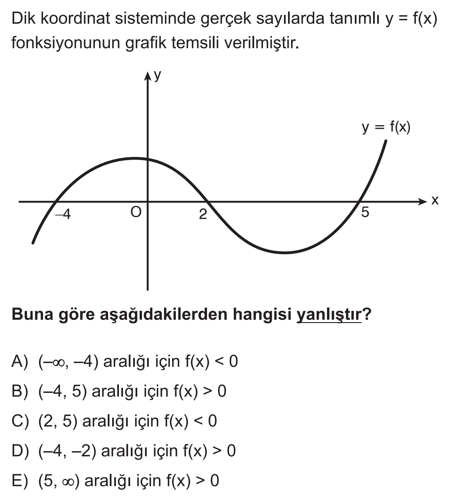
Çözüm
- Sıfırlar $-4,\ 2,\ 5$.
- $(-4,2)$'de grafik eksenin üstünde ($f\gt0$), $(2,5)$'te altında ($f\lt0$).
- $(-4,5)$ aralığının tamamında $f\gt0$ değildir: yanlış olan B.
Cevap: B
Soru 19Cevap: E
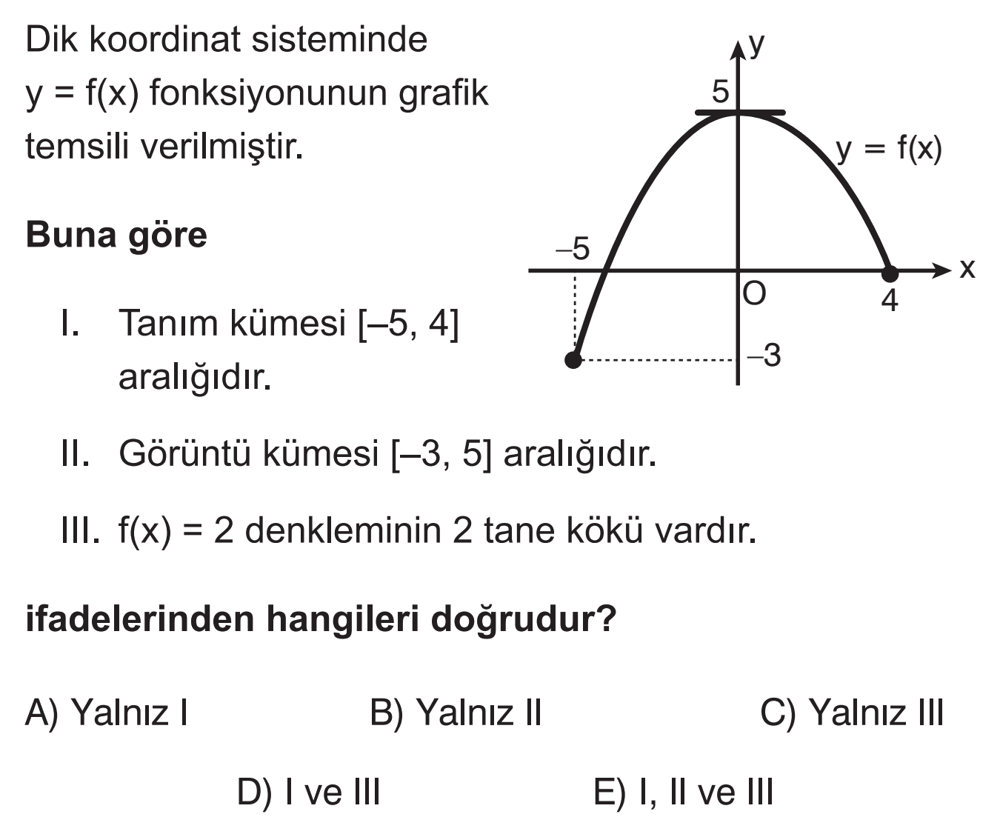
Çözüm
- Grafik $x=-5$'ten $x=4$'e uzanır: tanım kümesi $[-5,4]$ (I).
- En alçak değer $-3$, en yüksek $5$: görüntü kümesi $[-3,5]$ (II).
- $y=2$ doğrusu grafiği tepe noktasının iki yanında birer kez keser: iki kök (III). Cevap E.
Cevap: E
Soru 20Cevap: C
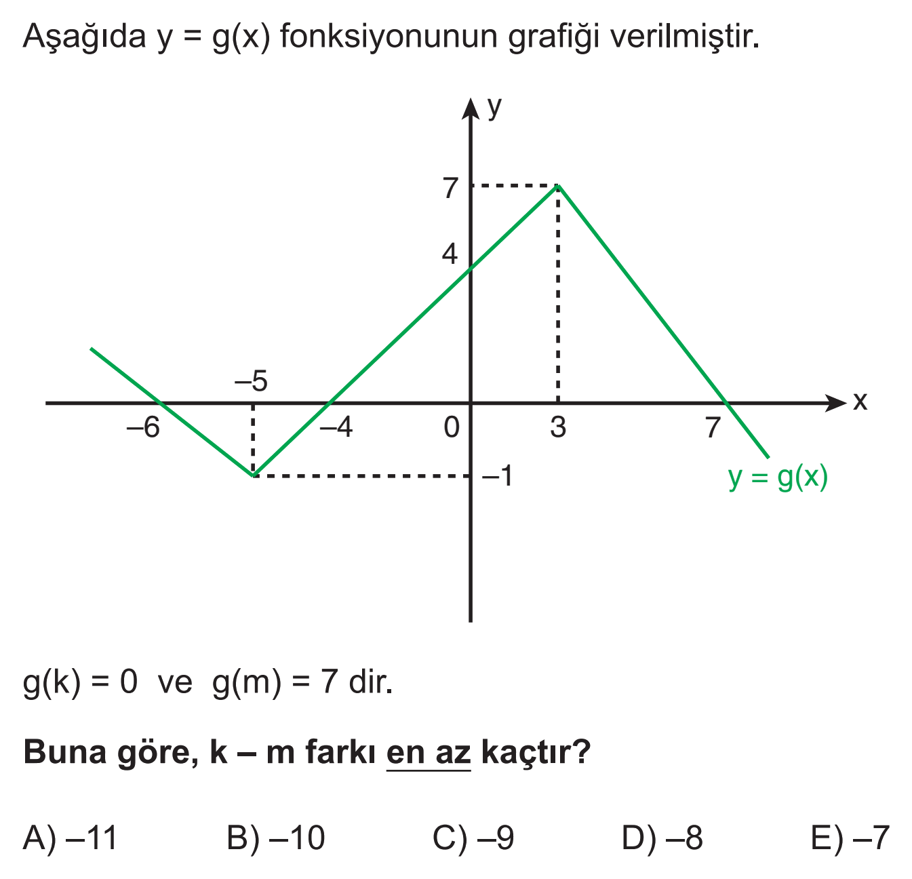
Çözüm
- $g(k)=0$ olan noktalar grafiğin $x$ eksenini kestiği yerler: $k\in\{-6,-4,7\}$.
- $g(m)=7$ yalnız tepe noktasında: $m=3$.
- $k-m$ en az $-6-3=-9$ (C).
Cevap: C
Soru 21Cevap: B
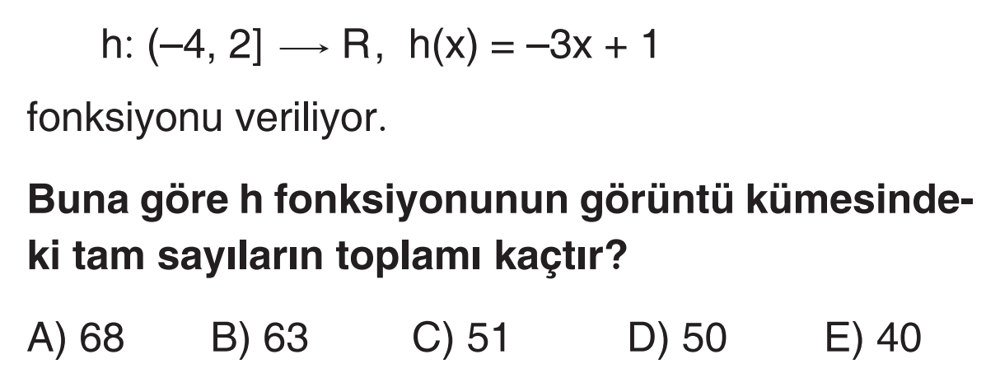
Çözüm
- $h(x)=-3x+1$ azalan; $x=2$ için $h(2)=-5$ (dahil), $x\to-4$ için $h\to13$ (dahil değil).
- Görüntü kümesi $[-5,13)$.
- Tam sayılar $-5,\dots,12$; toplam $\dfrac{(-5+12)\cdot18}{2}=63$ (B).
Cevap: B
Soru 22Cevap: E
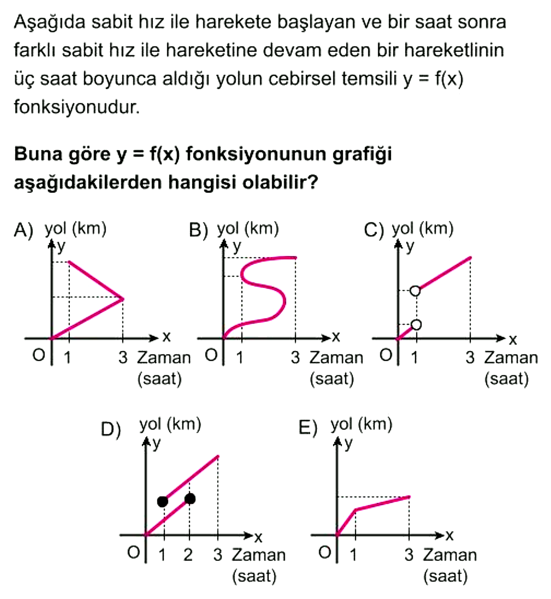
Çözüm
- Yol zamanla azalmaz ve her an için tek değer alır; hareket kesintisiz olduğundan grafikte sıçrama olmaz.
- İlk saat bir eğimle, sonraki iki saat farklı sabit eğimle doğrusal artar.
- Kırılma $t=1$'de olan, sürekli artan iki doğru parçası: E.
Cevap: E
Soru 23Cevap: B
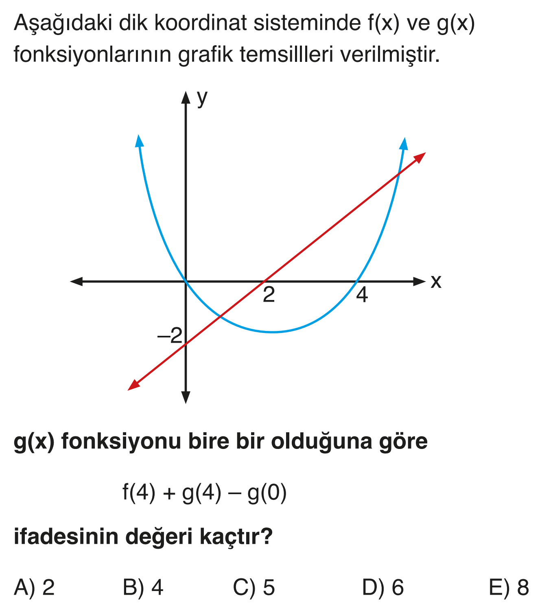
Çözüm
- Bire bir olan $g$, doğrudur: $(0,-2)$ ve $(2,0)$'dan geçer, $g(x)=x-2$.
- $f$ parabolü $x=4$'te $x$ eksenini kesiyor: $f(4)=0$.
- $f(4)+g(4)-g(0)=0+2-(-2)=4$ (B).
Cevap: B
Soru 24Cevap: D
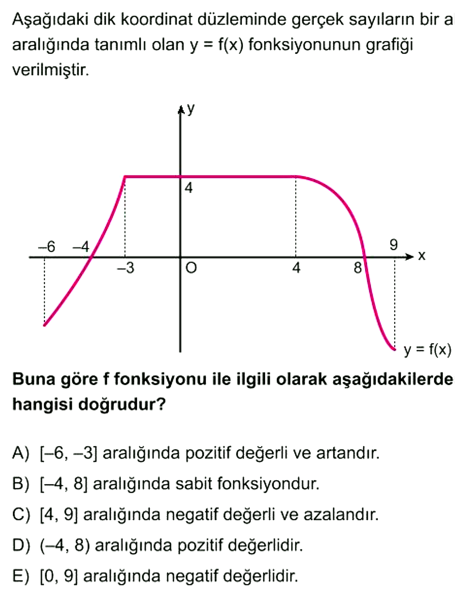
Çözüm
- Sıfırlar $-4$ ve $8$; bu ikisi arasında grafik eksenin üstünde.
- Grafik yalnız $[-3,4]$'te sabit ($4$); $[-6,-4)$'te negatif.
- $(-4,8)$ aralığında pozitif: D.
Cevap: D